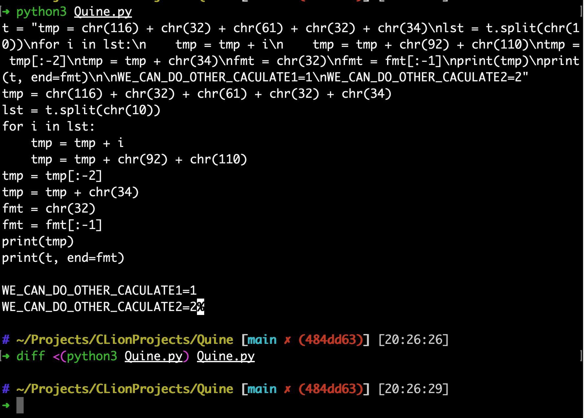
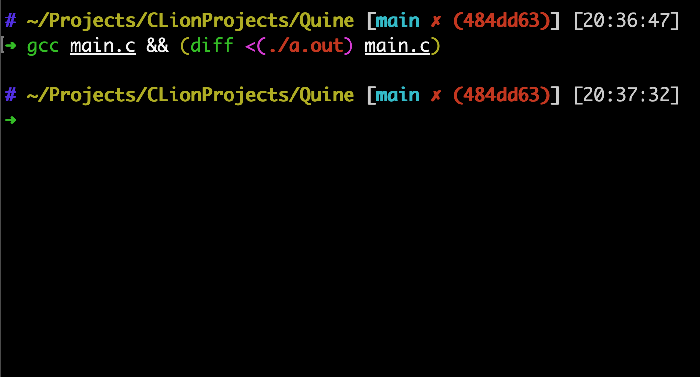

一台打印自己描述的图灵机
首先考虑这样一个问题：是否存在一台图灵机，它运行时会将它自己的描述打印到纸带上面，然后停机（可能以后会写关于图灵机编码的内容，不过现在就算不知道，也不影响～）。
如果从常规思路考虑的话，肯定包含的一个打印的逻辑，打印（它自己），而这个它自己也需要包含那一个打印的逻辑，也就是“打印（它自己）”，层层套娃，它会是这样的： 打印（XXXXX 打印 （XXX打印 （XXX打印（X……….XX）XXXXXX） XXX），显然这样是行不通的，我们需要换个角度考虑问题。
既然一步直接取得程序本身的描述似乎有些难，那不如将这个想要得到的自打印图灵机分成两部分：$A$ 和 $B$，图灵机的 $A$ 部分打印 $B$ 部分的描述，然后 $B$ 部分打印出 $A$ 部分的描述。看起来还是个死循环：$A$ 依赖于 $B$ 的描述，而 $B$ 则需要 $A$ 的描述，不过还是有办法的。
首先定义一个函数：
$$q:\Sigma^{*}\rightarrow\Sigma^{*}$$
也就是，输入任意串 $\omega$，$q$ 输出一个图灵机的描述，这个图灵机它在纸带上写下 $\omega$，然后停机。这个函数所做的事情非常简单，而且你可以使用一台图灵机模拟它。
回到刚才的问题，如果我们有了 $B$ 的描述，那么就可以很轻松地定义 $A$ 了：Print( $B$ 的描述)，很简单。
接着考虑 $B$，在 $A$ 运行完之后，纸带上面留下了一个字符串，它就是 $B$ 的描述，简单起见用$<B>$来表示。那么，当 $B$ 看到了停留在纸带上面的一个字符串：$<B>$时，它把这个字符串当作函数$q$的输入，那么，$q(<B>)$就是 $A$ 的描述了！
最后，$B$ 把两个子部分的描述 $q(<B>)$ 和 $<B>$ 组合起来，打印，然后停机，我们就得到了一个打印自己的图灵机！
递归定理
其实，上面的自打印程序只是递归定理（recursion theorem）的一个应用。递归定理的完整表述形式是：
设$T$是计算函数 $t:\Sigma^{*} \times \Sigma^{*} \rightarrow\Sigma^{*}$ 的一个图灵机，则存在计算函数 $r:\Sigma^{*}\rightarrow\Sigma^{*}$ 的一个图灵机R，使得对每一个 $\omega$ 都有 $r(\omega)=t(<R>, \omega)$
乍一看让人不明觉厉，但其实说的是，你可以构造一个图灵机 $R$，它获取自己的描述，然后进行还可以进行任意一些计算。例如，自打印程序的“计算”就是把它的描述打印出来。递归定理的证明也非常类似，因此就简略说下：
相应的图灵机可以这样构造：图灵机分成 $A$、$B$ 和 $C$ 三个部分，其中 $A$ 负责将 $B$ 和 $C$ 的描述，即 $<B><C>$打印出来，而 $B$ 负责的工作是，根据 $A$ 写在纸带上的内容，推导出其描述 $<A>$（也就是$q(<B><C>)$），而 $C$ 就根据 $A$、$B$ 的输出内容（整个图灵机的描述）以及图灵机的输入 $\omega$ 计算即可。
或许这样说有些不好理解，不过看完下面的实例就能明白了。
事实上，递归定理赋予了任何图灵完备语言的程序引用自身的能力，或者说，实现自引用词“这个”的能力。在设计程序时，大可以在伪代码中写上“获取自身的代码，并进行blablabla的计算”而不必担心无法实现（当然了，这里讨论的是计算理论中的可能性，而不考虑实际工程学中的种种限制）
实例
根据递归定理，事实上存在着无数个这种程序，而且可以被任意一种图灵完备语言都可以构造出。网络上已经有了许许多多关于自打印程序（或者说，Quine）的例子，这些例子常常或多或少用到了其语言的一些特性，因此非常简洁；而我接下来将展示两个分别用python和C写的自打印程序，这两个例子非常不简洁：），但是它尽可能复刻了上一节递归定理的证明，并且尽我所能少的应用了具体的语言特性，所以，你可以随意在例子的后面添加你需要的程序，比如，上一节证明中的 $C$ ，然后在 $A$ 部分稍作修改，得到你想要的获取自身源代码并进行一些计算（例如，统计其中的单词数或者别的一些什么玩意儿）的程序。
python实例
首先是python中的例子：
1 | t = "tmp = chr(116) + chr(32) + chr(61) + chr(32) + chr(34)\nlst = t.split(chr(10))\nfor i in lst:\n tmp = tmp + i\n tmp = tmp + chr(92) + chr(110)\ntmp = tmp[:-2]\ntmp = tmp + chr(34)\nprint(tmp)\nprint(t, end=chr(10))\n\nWE_CAN_DO_OTHER_CACULATE1=1\nWE_CAN_DO_OTHER_CACULATE2=2" |
运行一下：

可以看到，使用diff命令比较程序输出与程序源代码没有不同之处。
其中，第一行的赋值语句t=XXXX就是前面例子中的 $A$ 了，它把 $B$ 和 $C$ 的描述（源代码）$<B><C>$ “打印”出来，然后是 $B$，它所做的是看“纸带”上 $A$ 打印出来的内容（读取变量t），然后推断出 $A$ 的描述，也就是计算$q(<B><C>)$，就是变量tmp，最后把两部分的内容，即整个程序的源代码交给 $C$ 进行一些“计算”。
值得注意的是， $A$ 的内容是一整行，因此特别长；此外， $B$ 和 $C$ 的部分（或者说第一行往下的部分），不能有双引号“d的出现，因为如果下边出现了，那么第一行的字符串中就必须要有"的转义符的出现，否则解释器就要报错了，然而如果上面有转义符了，跟下面就不一样了，就不能正确打印 $B$ 和 $C$ 的描述了，而要进行修改的话，逻辑就会更加复杂，所以为了简单起见直接 $B$ 和 $C$ 的部分的所有双引号都用chr(34)代替。还有一点小技巧，就是，python中print默认最后会添加一个换行符，常规情况下去掉它需要用end=""来明确指出不需要换行符，既然不能使用双引号，那就造一个一字节的字符串，然后切掉它的第一个字符，就是一个空字符串了（我也想过直接用None，但还是不行）
或许不用我说就能明白，函数 $q()$ 对应的就是第一行之下，print语句之上的内容，它查看“纸带” 上 $A$ 打印出来的内容（变量t的内容），然后将它还原成原本的那条赋值语句t = XXXXXX，只不过是在不使用双引号的条件下完成的，所以略显麻烦。
如果想要进行别的一些计算的话，把最下面的WE_CAN_DO_OTHER_CACULATE两句换成想要计算的程序，然后把除第一行的内容外的代码全部复制，替换掉原第一行右边的内容，然后添加些换行符即可。
C实例
C语言的实例也是基本遵照递归定理证明来实行的，因此特别长，这里就不放出来了，直接看这个链接就好了。道理也是一样的，所以也完全可以添加自己的代码，然后把char t[4000] = XXXX那一行一下的内容全部复制，然后替换那一行右边的赋值就行啦！
需要注意的是，t,tmp,cp 三个数组的大小只有4000，如果添加的代码太多的话空间会不够，手动调到需要的大小就行了，另外，如果需要非常大空间的话，使用malloc()来动态分配也是完全可以的，就是会稍微麻烦一点（也不太麻烦），不过我懒，就没有采用动态分配233333
看一下这个的运行结果：

可以看到，使用diff比较，输出的内容与源代码还是一致的。
（完）